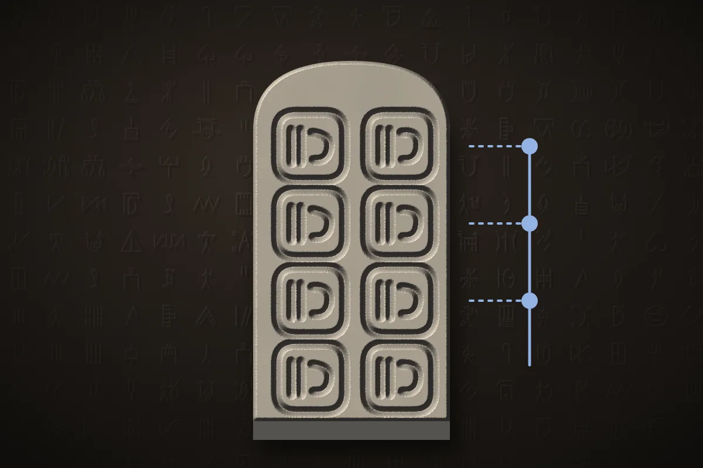

Other scripts · 1960
Reading Maya history before reading a single sound
Tatiana Proskouriakoff · American Antiquity 25(4):454–475

In a sentence
She matched glyph patterns to the lifespans of rulers, and found births and accessions without sounding anything out.
In plain words
Maya monuments carry dates. Proskouriakoff noticed that the dates on each group of monuments spanned a human lifetime, and that the same glyphs always sat beside a first date (birth) and a later one (taking the throne). So the texts were about real rulers. She worked out what glyphs meant from the pattern of events, years before anyone could read their sounds.
Technical detail
Pattern-of-dates analysis at Piedras Negras: recurring glyph-date pairings mapped onto plausible life events (birth, accession, death), with intervals constrained by human lifespans.
What we take from it
Next to testWe tried one version: seals from the same house share no more signs than seals from nearby houses. Still untried: seals broken on purpose, buried with someone, or found at gates.
The idea we are borrowing
Match sign patterns to what happened to each seal: broken on purpose, buried with someone, found at a gate
Where it stands: Next to test.